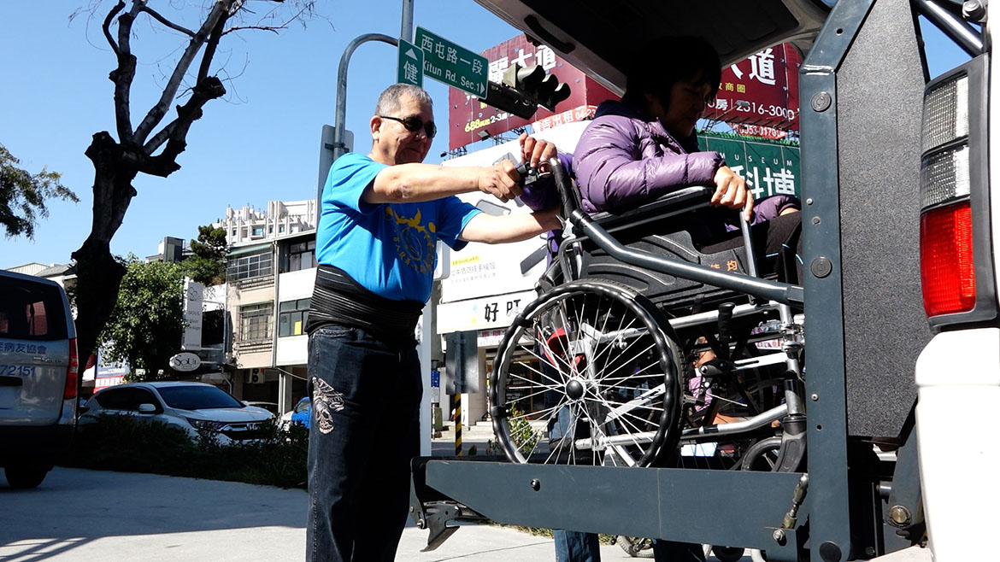

【企鵝坦白講—丈夫篇】
如果可以，讓我到派出所睡一晚
林秀成的妻子病逝已8、9年，但他說起照顧太太的31年過往，仍像昨天才發生的事。
「我太太很不能接受自己罹患小腦萎縮症，初期都告訴別人自己只是膝蓋不好，但人家介紹哪兒有靈丹妙藥，她就買，甚至曾經偷藏了好幾布袋的藥草、中西藥在床底下。」他一直被蒙在鼓裡，直到有一年孩子過年回家幫忙打掃，才知道太太花了幾百萬元買了各式各樣的藥。他問太太，「花了這麼多錢，但你真的敢吃嗎？」太太很生氣，「她說，難道她不能買個希望嗎？」
有段時間，聽說有位中醫師很神，他每星期帶太太去看診，「每星期光是藥費就要6千多元，我只能拚命工作賺錢。」他先開了間洗衣店，僱員工洗燙，再去承攬修公用電話的工程。「那時我白天開車四處去修電話，晚上再挨家挨戶去收衣服，晚上別人在睡覺，我還要燙衣服、摺衣服。」
然而最難挨的，是妻子心病反覆發作。「我為了賺醫藥費和生計，必須做二份工作，但她總是疑神疑鬼，認為我有外遇。」一度，太太病情嚴重到必須住進精神科病房，「醫生告訴我，她就是因為沒有安全感才會發作，你得陪她一起住院，就這樣，我一個大男人跟著住進女子精神病房33天。」
隨著身體狀況越來越糟，妻子的心病越來越嚴重。有天晚上，妻子咬定他和外傭有染，用盡全力抓他、撕破他身上的衣服，他情急打了她二巴掌，不料妻子哭著打電話報警，「警察來了，問我有沒有打她，我說有，但也拿出她的精神科就診證明。」
警察對他說：「老兄你可以不要打她嗎？」他一時情緒上來：「不要跟我說這些，我現在只想睡一覺，你們就直接把我抓回派出所吧！」警察聽出他的心酸，反而安慰他，「老兄，你以後若真心情不好，就走路到派出所來，我們那兒要酒有酒，要茶有茶。」
儘管如此，林秀成仍隨時把太太帶在身旁。「我們出生在保守的年代，但遇到這種病，大約有3成病友的另一半跑掉或要求離婚，但我只要想到太太為了我生了二個聰明的兒子，就覺得怎麼可以離開她；後來二個兒子婚後也發病，我更慶幸自己照顧妻子到最後，否則媳婦也吵著離婚怎麼辦？」
後來妻子走了，他又擔心起兒子。「兒子高中、大學時，我就帶他們去檢驗，結果他們都被遺傳了。」5、6年前，擔任律師的大兒子和在上市公司大陸廠擔任廠長的小兒子陸續發病，儘管辛辛苦苦賺的二棟房子都花在太太的疾病上，但一聽說紅外線照射機可以延緩病情，他還是省吃儉用，省下老人年金買了二台各4萬多元的照射機，寄去給二個兒子。
沒辦法，他老了，無法像過去照顧妻子那般照顧兒子，只能寄望媳婦幫忙照顧。但他很難不記掛，除了幫忙買復健機器，還總帶著自己菜園裡生產的青菜去探望兒孫。
半生都在照顧妻子，現在林秀成成了獨居老者。「我睡覺都不鎖門的，因為我會怕，有次我一個人在家，突然胃出血，還好來得及叫救護車才暈過去。」現在鄰居只要幾天沒見到他，就會打電話給他的兒子，問問他們「怎麼都沒看到你爸」。
但只剩下二分之一個胃的他，不愛停滯在無力情緒中太久，而是用種菜和服務病友把時間填滿；只要知道哪兒有病友因為家屬上班，或照顧者分身乏術，無法接送前往就診，就開著車子前往代勞。
採訪當天，他載一位豐原病友前往彰化看診又送回。抵達病友家，我們才發現該企鵝家族的三個兒子都遺傳父親的小腦萎縮症，父親和其中一位已經病逝，但母親仍要獨自照顧發病的二個兒子，林秀成說：「這樣的家庭根本請不起看護，還要一人同時照顧二、三個人；不要說出去工作，連接送看診都有問題，只能靠領殘障津貼和補助過日。」
能為同病相憐的家庭做一點是一點，「我還能開車，還會推輪椅。」他不想停下來，「也許是老天給我的使命吧！」